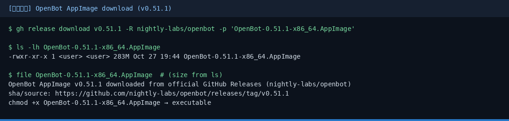
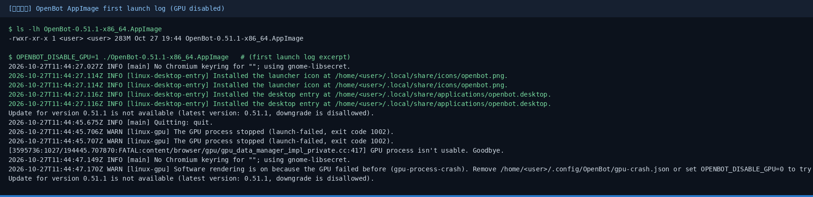
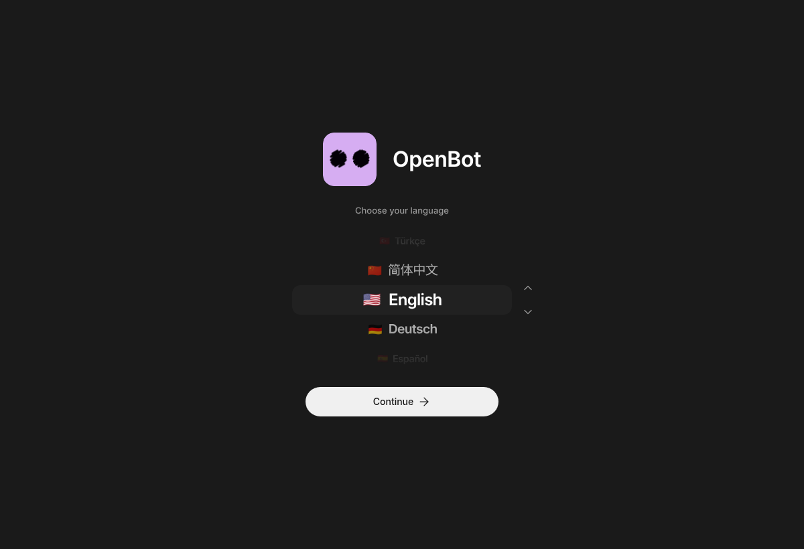
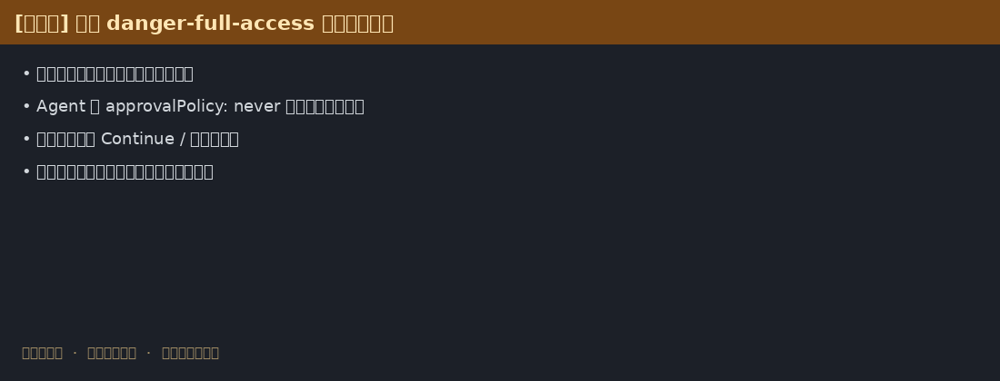
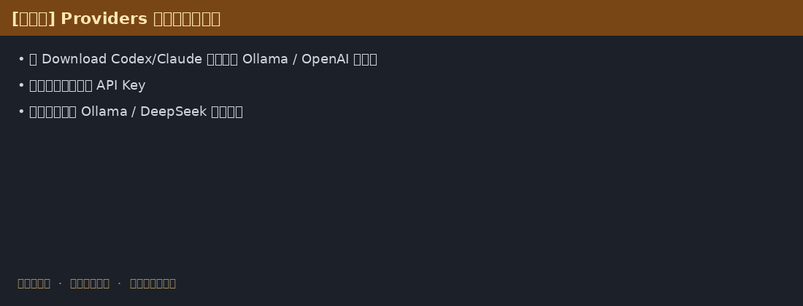

OpenBot 小白中文教程
nightly-labs/openbot · 不是 Intel OpenBot 机器人 · 官网 openbot.run
安全提醒：开发预览，Agent 可为 danger-full-access。只跑信任任务，勿二次分发官方二进制（PolyForm Noncommercial）。
从哪里下载？
只认官方 Releases：
https://github.com/nightly-labs/openbot/releases
macOS：`OpenBot-*-arm64.dmg` / `*-x64.dmg` · Windows：`*-x64.exe` · Linux：AppImage
安装与界面截图




